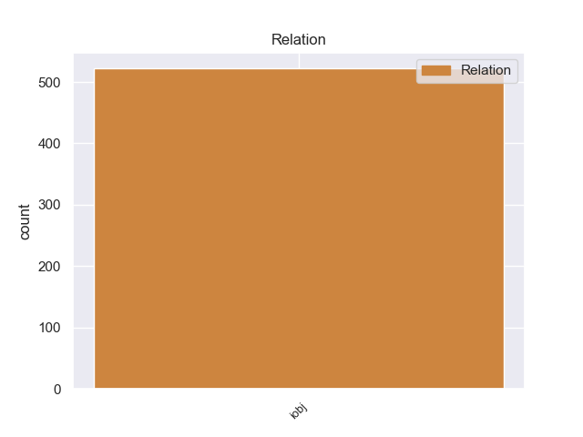
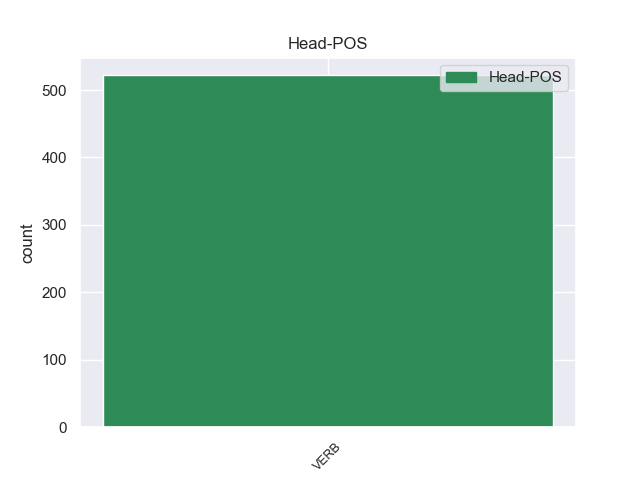
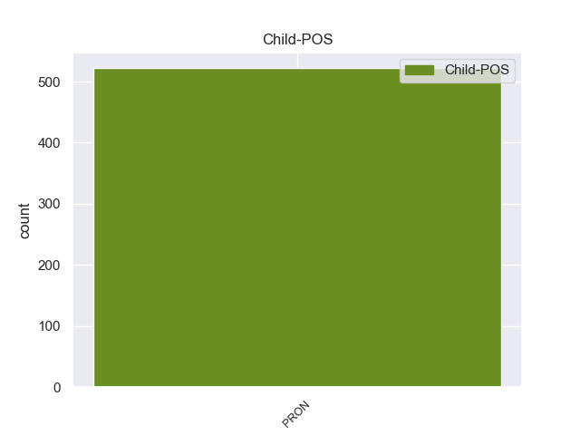

Distribution of features within this leaf



Agreement Rules sorted by frequency.
- When the dependent token is the indirect object(iobj) of the head token, and the dependent token is PRON.
1 Они _ _ _ _ 0 _ _ _
2 знали _ _ _ _ 0 _ _ _
3 , _ _ _ _ 0 _ _ _
4 что _ _ _ _ 0 _ _ _
5 им они PRON _ Case=Dat|Number=Plur|Person=3 7 iobj 7:iobj _
6 не _ _ _ _ 0 _ _ _
7 приходится приходиться VERB _ Aspect=Imp|Mood=Ind|Number=Sing|Person=3|Tense=Pres|VerbForm=Fin|Voice=Mid 0 _ _ _
8 ждать _ _ _ _ 0 _ _ _
9 милости _ _ _ _ 0 _ _ _
10 от _ _ _ _ 0 _ _ _
11 людей _ _ _ _ 0 _ _ _
12 , _ _ _ _ 0 _ _ _
13 что _ _ _ _ 0 _ _ _
14 не _ _ _ _ 0 _ _ _
15 для _ _ _ _ 0 _ _ _
16 них _ _ _ _ 0 _ _ _
17 выставлена _ _ _ _ 0 _ _ _
18 кормушка _ _ _ _ 0 _ _ _
19 , _ _ _ _ 0 _ _ _
20 и _ _ _ _ 0 _ _ _
21 брали _ _ _ _ 0 _ _ _
22 свое _ _ _ _ 0 _ _ _
23 с _ _ _ _ 0 _ _ _
24 бою _ _ _ _ 0 _ _ _
25 . _ _ _ _ 0 _ _ _
Disagree Examples:
1 - _ _ _ _ 0 _ _ _
2 Вам вы PRON _ Case=Dat|Number=Plur|Person=2 3 iobj 3:iobj _
3 придется прийтись VERB _ Aspect=Perf|Mood=Ind|Number=Sing|Person=3|Tense=Fut|VerbForm=Fin|Voice=Mid 0 _ _ _
4 пройти _ _ _ _ 0 _ _ _
5 в _ _ _ _ 0 _ _ _
6 отдел _ _ _ _ 0 _ _ _
7 кадров _ _ _ _ 0 _ _ _
8 , _ _ _ _ 0 _ _ _
9 заполнить _ _ _ _ 0 _ _ _
10 анкету _ _ _ _ 0 _ _ _
11 , _ _ _ _ 0 _ _ _
12 - _ _ _ _ 0 _ _ _
13 мягко _ _ _ _ 0 _ _ _
14 ответил _ _ _ _ 0 _ _ _
15 Семен _ _ _ _ 0 _ _ _
16 Еремеевич _ _ _ _ 0 _ _ _
17 . _ _ _ _ 0 _ _ _
1 - _ _ _ _ 0 _ _ _
2 А _ _ _ _ 0 _ _ _
3 не _ _ _ _ 0 _ _ _
4 кажется казаться VERB _ Aspect=Imp|Mood=Ind|Number=Sing|Person=3|Tense=Pres|VerbForm=Fin|Voice=Mid 0 _ _ _
5 тебе ты PRON _ Case=Dat|Number=Sing|Person=2 4 iobj 4:iobj SpaceAfter=No
6 , _ _ _ _ 0 _ _ _
7 что _ _ _ _ 0 _ _ _
8 ей _ _ _ _ 0 _ _ _
9 трудно _ _ _ _ 0 _ _ _
10 придется _ _ _ _ 0 _ _ _
11 на _ _ _ _ 0 _ _ _
12 линии _ _ _ _ 0 _ _ _
13 ? _ _ _ _ 0 _ _ _
14 - _ _ _ _ 0 _ _ _
15 спросил _ _ _ _ 0 _ _ _
16 Семен _ _ _ _ 0 _ _ _
17 Еремеевич _ _ _ _ 0 _ _ _
18 . _ _ _ _ 0 _ _ _
1 - _ _ _ _ 0 _ _ _
2 Нет _ _ _ _ 0 _ _ _
3 , _ _ _ _ 0 _ _ _
4 разрешите _ _ _ _ 0 _ _ _
5 , _ _ _ _ 0 _ _ _
6 я _ _ _ _ 0 _ _ _
7 вам вы PRON _ Case=Dat|Number=Plur|Person=2 9 iobj 9:iobj _
8 все-таки _ _ _ _ 0 _ _ _
9 объясню объяснить VERB _ Aspect=Perf|Mood=Ind|Number=Sing|Person=1|Tense=Fut|VerbForm=Fin|Voice=Act 0 _ _ _
10 , _ _ _ _ 0 _ _ _
11 - _ _ _ _ 0 _ _ _
12 не _ _ _ _ 0 _ _ _
13 унималась _ _ _ _ 0 _ _ _
14 Ефимова _ _ _ _ 0 _ _ _
15 . _ _ _ _ 0 _ _ _
1 Получается _ _ _ _ 0 _ _ _
2 , _ _ _ _ 0 _ _ _
3 что _ _ _ _ 0 _ _ _
4 мы _ _ _ _ 0 _ _ _
5 имеем _ _ _ _ 0 _ _ _
6 шансы _ _ _ _ 0 _ _ _
7 получить _ _ _ _ 0 _ _ _
8 хорошие _ _ _ _ 0 _ _ _
9 прибыли _ _ _ _ 0 _ _ _
10 через _ _ _ _ 0 _ _ _
11 несколько _ _ _ _ 0 _ _ _
12 лет _ _ _ _ 0 _ _ _
13 , _ _ _ _ 0 _ _ _
14 но _ _ _ _ 0 _ _ _
15 для _ _ _ _ 0 _ _ _
16 этого _ _ _ _ 0 _ _ _
17 уже _ _ _ _ 0 _ _ _
18 сейчас _ _ _ _ 0 _ _ _
19 нужно _ _ _ _ 0 _ _ _
20 вложить _ _ _ _ 0 _ _ _
21 в _ _ _ _ 0 _ _ _
22 это _ _ _ _ 0 _ _ _
23 дело _ _ _ _ 0 _ _ _
24 немалые _ _ _ _ 0 _ _ _
25 деньги _ _ _ _ 0 _ _ _
26 : _ _ _ _ 0 _ _ _
27 оборудование _ _ _ _ 0 _ _ _
28 для _ _ _ _ 0 _ _ _
29 такого _ _ _ _ 0 _ _ _
30 банка _ _ _ _ 0 _ _ _
31 стоит _ _ _ _ 0 _ _ _
32 довольно _ _ _ _ 0 _ _ _
33 дорого _ _ _ _ 0 _ _ _
34 , _ _ _ _ 0 _ _ _
35 а _ _ _ _ 0 _ _ _
36 мы _ _ _ _ 0 _ _ _
37 должны _ _ _ _ 0 _ _ _
38 быть _ _ _ _ 0 _ _ _
39 на _ _ _ _ 0 _ _ _
40 высоте _ _ _ _ 0 _ _ _
41 - _ _ _ _ 0 _ _ _
42 нужно _ _ _ _ 0 _ _ _
43 уверить _ _ _ _ 0 _ _ _
44 клиентов _ _ _ _ 0 _ _ _
45 , _ _ _ _ 0 _ _ _
46 что _ _ _ _ 0 _ _ _
47 мы _ _ _ _ 0 _ _ _
48 действительно _ _ _ _ 0 _ _ _
49 предоставляем предоставлять VERB _ Aspect=Imp|Mood=Ind|Number=Plur|Person=1|Tense=Pres|VerbForm=Fin|Voice=Act 0 _ _ _
50 им они PRON _ Case=Dat|Number=Plur|Person=3 49 iobj 49:iobj _
51 серьезную _ _ _ _ 0 _ _ _
52 услугу _ _ _ _ 0 _ _ _
53 . _ _ _ _ 0 _ _ _
1 Мне я PRON _ Case=Dat|Number=Sing|Person=1 2 iobj 2:iobj _
2 кажется казаться VERB _ Aspect=Imp|Mood=Ind|Number=Sing|Person=3|Tense=Pres|VerbForm=Fin|Voice=Mid 0 _ _ _
3 , _ _ _ _ 0 _ _ _
4 в _ _ _ _ 0 _ _ _
5 кино _ _ _ _ 0 _ _ _
6 есть _ _ _ _ 0 _ _ _
7 одна _ _ _ _ 0 _ _ _
8 только _ _ _ _ 0 _ _ _
9 фигура _ _ _ _ 0 _ _ _
10 , _ _ _ _ 0 _ _ _
11 которая _ _ _ _ 0 _ _ _
12 существует _ _ _ _ 0 _ _ _
13 как-то _ _ _ _ 0 _ _ _
14 очень _ _ _ _ 0 _ _ _
15 основательно _ _ _ _ 0 _ _ _
16 и _ _ _ _ 0 _ _ _
17 в _ _ _ _ 0 _ _ _
18 достаточной _ _ _ _ 0 _ _ _
19 степени _ _ _ _ 0 _ _ _
20 независима _ _ _ _ 0 _ _ _
21 - _ _ _ _ 0 _ _ _
22 это _ _ _ _ 0 _ _ _
23 Ингмар _ _ _ _ 0 _ _ _
24 Бергман _ _ _ _ 0 _ _ _
25 . _ _ _ _ 0 _ _ _